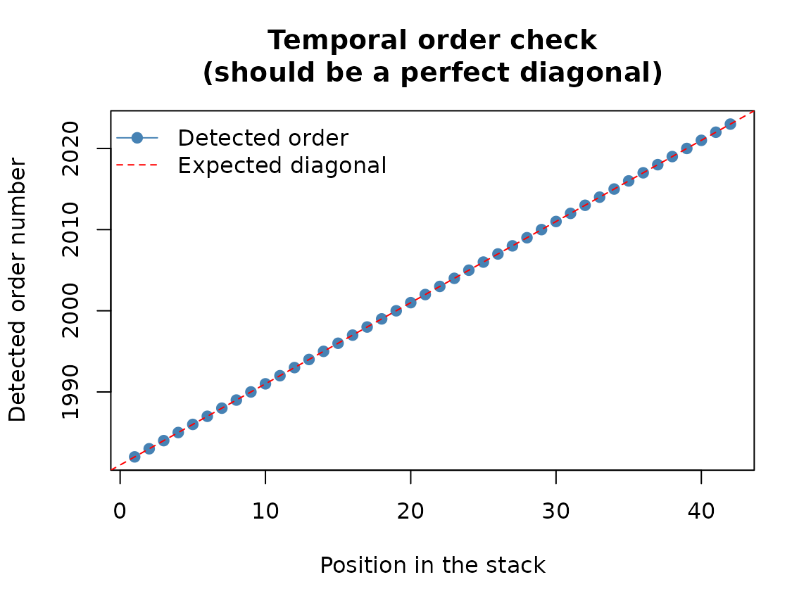
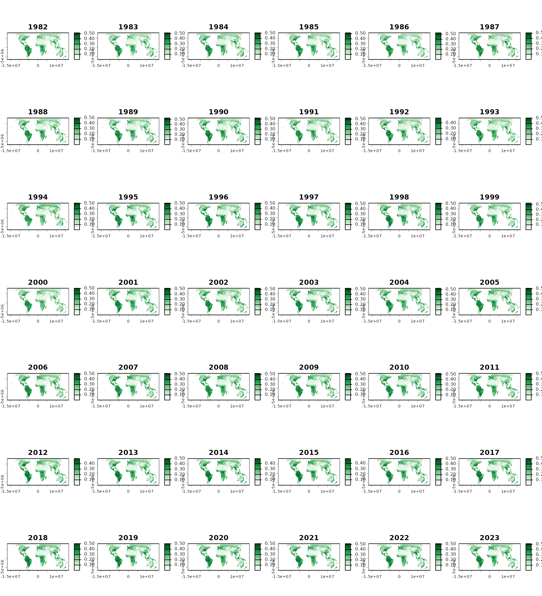
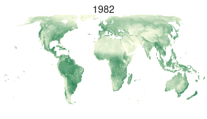

0. Loading and exploring spatiotemporal data
Source:vignettes/a-getting-started.Rmd
a-getting-started.RmdWhy this matters
sptrends analyses spatiotemporal trends in gridded environmental data. These datasets commonly exhibit serial correlation and spatial dependence, while analysing many cells simultaneously creates a large-scale multiple-testing problem. Because these challenges interact to affect statistical inference, sptrends keeps the main analytical stages explicit and separate: serial-correlation assessment and treatment, trend testing, slope estimation and multiple-testing correction. These stages may be used independently or combined within complete analytical workflows.
This is not simply a sequence of steps assembled for convenience. True Significant Trends (TST), introduced by Gutiérrez-Hernández and García (2025), is the methodological origin of this design: it identified these three challenges as interconnected facets of the same underlying problem, not as separate issues to be patched independently, and sptrends inherits that understanding rather than just its pipeline.
This vignette shows how to recognise, inspect and visualise the input, and how the main analytical stages fit together. Later vignettes explain each methodological decision.
What read_ordered_stack() and
read_netcdf_stack() do
The usual analytical input is a terra::SpatRaster with
one layer per time step, ordered from earliest to latest. It can be
created from chronologically ordered raster files with
read_ordered_stack() or imported from NetCDF datasets with
read_netcdf_stack(). Across these layers, each valid raster
cell defines an individual time series embedded within a spatially
structured dataset. Analytical results are returned as structured
sptrends objects with familiar print(),
summary() and plot() methods.
Basic workflow
The bundled example is an annual NDVI series derived from the NOAA STAR Blended Vegetation Health Product (Blended-VHP). The data were spatially resampled to a coarser 100 km resolution to enable faster execution of the examples and reprojected to an Eckert IV equal-area grid so that every raster cell represents the same surface area. An equal-area projection is not required by sptrends, but this consideration is often overlooked and becomes important when interpreting cell counts, spatial proportions or area-based summaries.
r <- read_ordered_stack(example_data("vhp_ndvi"))
#> Temporal order auto-detected with pattern '(19[0-9]{2}|20[0-9]{2})'.
#> Automatic mode: order detected from file names. For higher reliability -- especially if the series is not annual -- supplying 'files' explicitly (with 'time' or 'cycle_type') is recommended. See ?read_ordered_stack.
#> Temporal order verification (mandatory, cannot be skipped):
#> stack_position detected_number file
#> 1 1982 VHP_SMN_annual_ndvi_1982.tif
#> 2 1983 VHP_SMN_annual_ndvi_1983.tif
#> 3 1984 VHP_SMN_annual_ndvi_1984.tif
#> 4 1985 VHP_SMN_annual_ndvi_1985.tif
#> 5 1986 VHP_SMN_annual_ndvi_1986.tif
#> 6 1987 VHP_SMN_annual_ndvi_1987.tif
#> 7 1988 VHP_SMN_annual_ndvi_1988.tif
#> 8 1989 VHP_SMN_annual_ndvi_1989.tif
#> 9 1990 VHP_SMN_annual_ndvi_1990.tif
#> 10 1991 VHP_SMN_annual_ndvi_1991.tif
#> 11 1992 VHP_SMN_annual_ndvi_1992.tif
#> 12 1993 VHP_SMN_annual_ndvi_1993.tif
#> 13 1994 VHP_SMN_annual_ndvi_1994.tif
#> 14 1995 VHP_SMN_annual_ndvi_1995.tif
#> 15 1996 VHP_SMN_annual_ndvi_1996.tif
#> 16 1997 VHP_SMN_annual_ndvi_1997.tif
#> 17 1998 VHP_SMN_annual_ndvi_1998.tif
#> 18 1999 VHP_SMN_annual_ndvi_1999.tif
#> 19 2000 VHP_SMN_annual_ndvi_2000.tif
#> 20 2001 VHP_SMN_annual_ndvi_2001.tif
#> 21 2002 VHP_SMN_annual_ndvi_2002.tif
#> 22 2003 VHP_SMN_annual_ndvi_2003.tif
#> 23 2004 VHP_SMN_annual_ndvi_2004.tif
#> 24 2005 VHP_SMN_annual_ndvi_2005.tif
#> 25 2006 VHP_SMN_annual_ndvi_2006.tif
#> 26 2007 VHP_SMN_annual_ndvi_2007.tif
#> 27 2008 VHP_SMN_annual_ndvi_2008.tif
#> 28 2009 VHP_SMN_annual_ndvi_2009.tif
#> 29 2010 VHP_SMN_annual_ndvi_2010.tif
#> 30 2011 VHP_SMN_annual_ndvi_2011.tif
#> 31 2012 VHP_SMN_annual_ndvi_2012.tif
#> 32 2013 VHP_SMN_annual_ndvi_2013.tif
#> 33 2014 VHP_SMN_annual_ndvi_2014.tif
#> 34 2015 VHP_SMN_annual_ndvi_2015.tif
#> 35 2016 VHP_SMN_annual_ndvi_2016.tif
#> 36 2017 VHP_SMN_annual_ndvi_2017.tif
#> 37 2018 VHP_SMN_annual_ndvi_2018.tif
#> 38 2019 VHP_SMN_annual_ndvi_2019.tif
#> 39 2020 VHP_SMN_annual_ndvi_2020.tif
#> 40 2021 VHP_SMN_annual_ndvi_2021.tif
#> 41 2022 VHP_SMN_annual_ndvi_2022.tif
#> 42 2023 VHP_SMN_annual_ndvi_2023.tif
#> Stack built: 42 layers, 146 x 338 cells.
#> >> [read_ordered_stack()] elapsed: 3.08 s
r
#> class : SpatRaster
#> size : 146, 338, 42 (nrow, ncol, nlyr)
#> resolution : 100000, 100000 (x, y)
#> extent : -1.691185e+07, 1.688815e+07, -6569957, 8030043 (xmin, xmax, ymin, ymax)
#> coord. ref. : World_Eckert_IV
#> source(s) : memory
#> names : VHP_S~_1982, VHP_S~_1983, VHP_S~_1984, VHP_S~_1985, VHP_S~_1986, VHP_S~_1987, ...
#> min values : 0.000019, 0.000038, 0.000019, 0.000038, 0.000019, 0.000019, ...
#> max values : 0.535432, 0.513679, 0.520081, 0.550945, 0.526776, 0.526885, ...
#> time (years): 1982-00-00 to 2023-00-00 (42 steps)
terra::nlyr(r)
#> [1] 42
terra::time(r)
#> [1] 1982 1983 1984 1985 1986 1987 1988 1989 1990 1991 1992 1993 1994 1995 1996
#> [16] 1997 1998 1999 2000 2001 2002 2003 2004 2005 2006 2007 2008 2009 2010 2011
#> [31] 2012 2013 2014 2015 2016 2017 2018 2019 2020 2021 2022 2023The imported object contains 42 annual observations spanning 1982–2023. Before beginning any trend analysis, it is good practice to verify that the temporal ordering has been detected correctly and that the raster series matches the expected study period.
Start by viewing the complete series and checking the temporal order:
ndvi_col <- rev(grDevices::hcl.colors(50, "Greens 3"))
terra::plot(
r, col = ndvi_col, colNA = "transparent", nc = 6,
maxnl = terra::nlyr(r)
)
The same layers can be displayed sequentially in an interactive R session:

The embedded animation uses the same 42 layers shown in the mosaic. To reproduce it interactively from the original raster series, run:
terra::animate(
r,
pause = 0.2,
main = as.character(terra::time(r)),
col = ndvi_col,
colNA = "transparent"
)Understanding the results
So far you have only looked at the raw data. Once an analytical
function has actually been run – in any of the vignettes that follow –
its output presents itself the same way throughout the package:
analytical functions return structured objects with familiar
print(), summary() and plot()
methods. Complete workflows retain their intermediate results, so users
can examine every analytical stage rather than treating the workflow as
a black box.
Choosing the main options
| Your question | Where to continue |
|---|---|
| Is temporal dependence a problem? | Prewhitening vignette |
| Is there evidence of a trend? | Trend-test vignette |
| How large is the change? | Slope-estimation vignette |
| Which findings survive multiple testing? | Multiple-testing vignette |
| How do I combine the stages? | Trend-workflows vignette |
Common mistakes
- Do not assume layers are in chronological order; confirm it directly before analysis.
- Do not treat missing-value codes as valid observations.
- Do not interpret raster-cell counts or proportions as surface area without considering the projection and cell size; use an equal-area grid when area-based comparisons or summaries are required.
- Do not assume that observations are independent, whether across time (serial correlation, see prewhitening vignette) or across neighbouring cells (spatial dependence, see trend-test vignette); both are common in gridded environmental time series and affect inference.
- Do not treat cell-wise tests as isolated analyses; testing many raster cells simultaneously creates a large-scale multiple-testing problem (see multiple-testing vignette).
Next steps
Continue to vignette("b-prewhitening"),
or go directly to vignette("c-trend-test") if
temporal preprocessing is unnecessary.
Further details
See ?sptrends for the function index and
quality-assurance protocol, ?read_ordered_stack and
?read_netcdf_stack for data import, and
?inspect_ts_cell for interactive exploration.